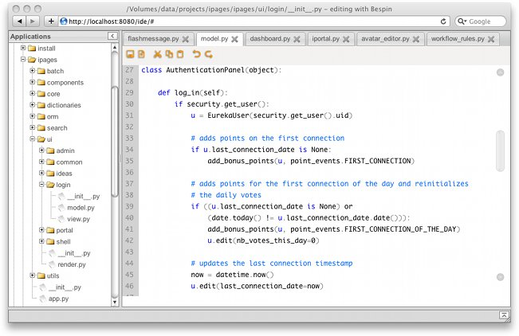
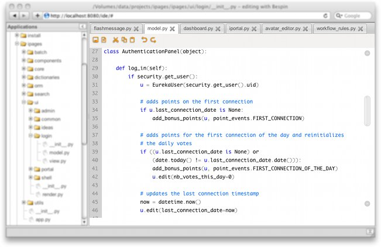
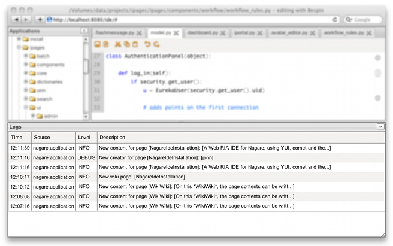
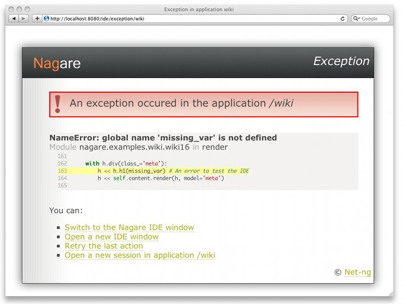
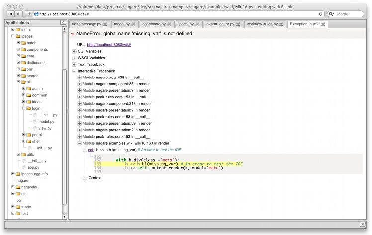
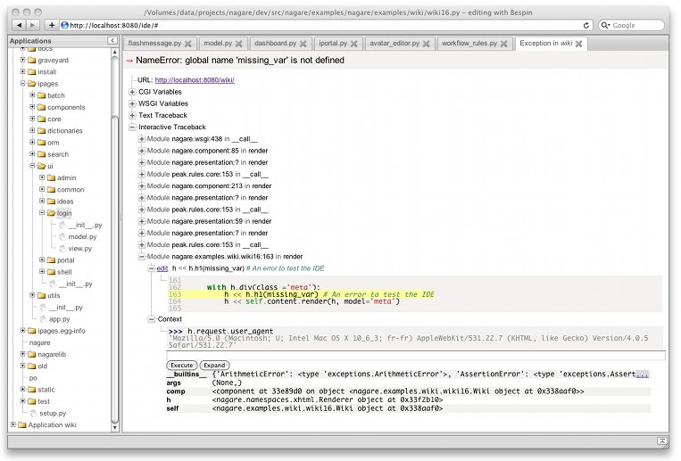

Nagare Integrated Development Environment¶
Nagare IDE is a pure Web Integrated Development Environment dedicated to the Nagare Web framework.
It offers the browsing of your projects, the edition of the sources, the debugging of the raised exceptions and the consultation in real-time of the applications logs.
Installation¶
Nagare IDE is a normal Nagare application that can simply be installed with:
<NAGARE_HOME>/bin/easy_install nagare.ide
and then launched alongside with other applications:
<NAGARE_HOME>/bin/nagare-admin serve --reload ide <app1> <app2> ...
It’s recommanded to use the --reload option so that Nagare will be automatically
restarted when a source is modified in the integrated editor then saved.
Warning
For obvious security reasons, only use Nagare IDE in a development environnement but never in production.
The IDE is then accessible at http://localhost:8080/ide:
Once installed, the IDE configuration file is located at
<NAGARE_HOME>/lib/python<version>/site-packages/nagare.ide-<version>.egg/conf/ide.cfg
Panels¶
The IDE follows a classical layout with a screen divised in 3 panels: the navigator,0 the editor and the logger panels.
Editor¶
The editor panel provides direct edition of the sources:
Some shortcuts are provided:
| Action | Shortcut |
|---|---|
| Beginning of line / Column #0 | Home or ALT+LeftArrow |
| End of line | End or ALT+RightArrow |
| Page Up | Up or ALT+UpArrow |
| Page Down | Down ou ALT-DownArrow |
| Word left | CTRL+LeftArrow |
| Word right | CTRL+RightArrow |
| Top of file | CTRL+UpArrow or CTRL+Home |
| End of file | CTRL+DownArrow or CTRL+End |
| Select all | CTRL+A |
| Copy | CTRL+C |
| Paste | CTRL+V |
| Cut | CTRL+X |
| Delete line | CTRL+K |
| Delete word left | CTRL+Backspace |
| Delete word right | CTRL+Del |
| Undo | CTRL+Z |
| Redo | SHIFT+CTRL+Z or CTRL+Y |
| Indent | Tab (on a selected region) |
| Dedent | SHIFT+Tab |
| Insert line below | CTRL+Enter |
| Save | CTRL+S |
The available options in the [editor] section of the configuration file are:
| Name | Default value | Description |
|---|---|---|
| theme | white | Theme color (“white”, “black” or “pastel”) |
| tabshowspace | on | Are the tabs visible? |
| autoindent | on | Are the current indentation kept for a new line? |
| closepairs | off | Automatic insertion of a closing ‘)’, ‘]’, ‘}’ …? |
| highlightline | on | Is the current line highlighted? |
| fontsize | 10 | Size of the editor font |
| tabsize | 4 | Number of space characters inserted for a tab |
Logger¶
The logger panel receives in real-time, on a comet channel, the messages logged by the applications:
By default, all the messages logged using the dedicated application logger, with at least the INFO level, are sent to the IDE. The logging level can be changed in the IDE configuration file. And, more generaly, to know how to use the logging system of Nagare, see The log service
Debugging¶
The simple fact of launching the ide application alongside to other
applications put these applicatons in debug mode where the IDE will catch their
exceptions.
Note
The debug is not activated when the applications are launched by a
multi-processes publisher (for example the fastcgi publisher).
When an exception occurs in an application, the IDE catches it and displays a summary view:
Also a full interactive exception is pushed in real-time to the IDE editor panel:
Each frame of the exception can be expanded and a click on the edit link open
a new editor tab, automatically set to the offending line ready to be fixed then
saved:
An iteractive Python evaluator is also available in each frame:
Security¶
Out of the box, the Nagare IDE application creates a security manager to filter
the accesses based on their source IP address. By default only the connections
from 127.0.0.1 are accepted, other accesses being refused with a 403 Forbidden
(Access was denied for this resource) error code.
It’s possible to change the list of accepted IP addresses, or even to use a totally
different security manager in the [security] section of the configuration file:
| Name | Default value | Description |
|---|---|---|
| manager | nagare.ide.security:SecurityManager | Reference to the security manager to instanciate |
| allow_hosts | [] | Set to [“127.0.0.1”] in the default configuration file |